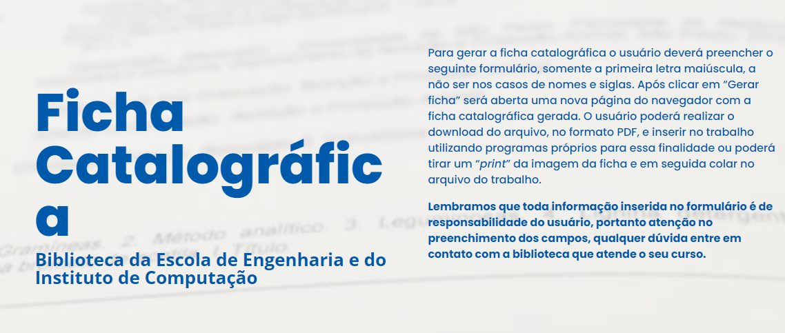
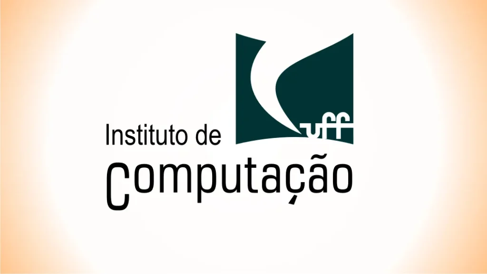

pdflatex tese.tex
|
Para PDF real: Ctrl+P → Salvar como PDF
(desmarque cabecalho/rodape do navegador)
MAIQUEL E SILVA GOMES
FRAMEWORK COM INTELIGÊNCIA ARTIFICIAL PARA MODELAGEM SEMÂNTICA DE PROCESSOS DE NEGÓCIO EM BPMN A PARTIR DE LINGUAGEM NATURAL / MAIQUEL E SILVA GOMES. – NITERÓI, 2026.
Orientador: José Viterbo Filho
Dissertacao de Mestrado – UNIVERSIDADE FEDERAL FLUMINENSE, Programa de Pos-Graduacao em Computacao, 2026.
[Substituir pelo print da ficha gerada pela Biblioteca da EEIC-UFF]
MAIQUEL E SILVA GOMES
FRAMEWORK COM INTELIGÊNCIA ARTIFICIAL PARA MODELAGEM SEMÂNTICA DE PROCESSOS DE NEGÓCIO EM BPMN A PARTIR DE LINGUAGEM NATURAL
Dissertacao de Mestrado apresentada ao Programa de Pos-Graduacao em Computacao da UNIVERSIDADE FEDERAL FLUMINENSE como requisito parcial para a obtenção do Grau de Mestre em Computação. Área de concentração: Ciencia da Computacao.
Aprovada em _____ de 2026.
BANCA EXAMINADORA
José Viterbo Filho – Orientador, UNIVERSIDADE FEDERAL FLUMINENSE
Prof. <NOME DO AVALIADOR> – <INSTITUIÇÃO>
Prof. <NOME DO AVALIADOR> – <INSTITUIÇÃO>
Prof. <NOME DO AVALIADOR> – <INSTITUIÇÃO>
NITERÓI
2026
[Lista vazia]
[Lista vazia]
| ACR | Acronimos |
| ONU | Organização das Nações Unidas |
ONUONUOrganização das Nações Unidas ACRACRAcronimos
MAIQUEL E SILVA GOMES
FRAMEWORK COM INTELIGÊNCIA ARTIFICIAL PARA MODELAGEM SEMÂNTICA DE PROCESSOS DE NEGÓCIO EM BPMN A PARTIR DE LINGUAGEM NATURAL
UNIVERSIDADE FEDERAL FLUMINENSE
José Viterbo Filho
Gyslla Vasconcelos
NITERÓI
2026
Tese de Doutorado OU Dissertação de Mestrado apresentada ao Programa de Pós-Graduação em Computação da Universidade Federal Fluminense como requisito parcial para a obtenção do Grau de Doutor ou Mestre em Computação. Área de concentração: ÁREA DE CONCENTRAÇÃO.

⚠ Para o preview web exibir esta imagem, salve uma cópia de capitulos/figuras/ficha_catalografica.png como .png na mesma pasta.';">Figura – Local da ficha catalográfica
NOME DO ALUNO
TÍTULO DO TRABALHO
Tese de Doutorado ou Dissertação de Mestrado apresentada ao Programa de Pós-Graduação em Computação da Universidade Federal Fluminense como requisito parcial para a obtenção do Grau de Doutor ou Mestre em Computação. Área de concentração: ÁREA DE CONCENTRAÇÃO.
Aprovada em MES de ANO.
BANCA EXAMINADORA Prof. NOME do ORIENTADOR - Orientador, UFF Prof. NOME DO AVALIADOR, INSTITUIÇÃO Prof. NOME DO AVALIADOR, INSTITUIÇÃO Prof. NOME DO AVALIADOR, INSTITUIÇÃO Prof. NOME DO AVALIADOR, INSTITUIÇÃO
Niterói
ANO
Aos meus pais, pelo amor incondicional e pela crença inabalável em cada passo desta jornada. [] À minha orientadora e ao meu orientador, pela generosidade intelectual e pela confiança depositada. [] “A lógica levará você de A a B. A imaginação levará você a qualquer lugar.” — Albert Einstein
Agradecimentos Elemento opcional, colocado após a dedicatória (ABNT, 2005). Ao meu orientador e minha orientadora, que me mostraram os caminhos a serem seguidos e pela confiança depositada.
Elemento obrigatório, constituído de uma sequência de frases concisas e objetivas e não de uma simples enumeração de tópicos, não ultrapassando 500 palavras ABNT NBR 6028:2003.
Palavras-chave: Palavras representativas do conteúdo do trabalho, isto é, palavras-chave e/ou descritores, conforme a ABNT NBR 6028:2003.
Elemento obrigatório, em língua estrangeira, com as mesmas características do resumo em língua vernácula (ABNT, 2005).
O resumo deve ser redigido na terceira pessoa do singular, com verbo na voz ativa, não ultrapassando uma página ou 500 palavras, segundo a ABNT NBR 6028). Evitando-se ouso de parágrafos no meio do resumo, assim como fórmulas, equações e símbolos. Iniciar o resumo situando o trabalho no contexto geral, apresentar os objetivos, descrever a metodologia utilizada, relatar a contribuição própria, comentar os resultados obtidos e finalmente apresentaras conclusões mais importantes do trabalho.
Keywords: Palavras representativas do conteúdo do trabalho, isto é, palavras-chave e/ou descritores, na língua (ABNT, 2005).
Deve apresentar uma visão global da pesquisa, incluindo: breve histórico, importância e justificativa da escolha do tema, delimitações do assunto, formulação de hipóteses, objetivos da pesquisa e estrutura do trabalho.
Este é o primeiro capítulo, apresentamos abaixo as informações de configuração mais utilizadas
Fonte dos dados sobre citação direta e indireta do site https://www.tecmundo.com.br/tutorial/834-aprenda-a-usar-as-normas-da-abnt-citacao-2-de-4-.htm, autora Xavier (2020)
São comandos de citação deste template usando o pacote abntex2cite:
textcite retorna por exemplo: Kitchenham (2009)
textcite[n de pag.] retorna por exemplo uma citação com a pagina de referencia: Kitchenham (2009)
cite retorna por exemplo: (KITCHENHAM, 2009)
cite[n de pag.] retorna por exemplo uma citação com a pagina de referencia: (KITCHENHAM, 2009, p.20)
Obs: para as aspas ficarem corretas usar no inicio 2 crase “ e no final 2 apóstrofos ”
Referente as citações diretas existem 2 formas, sendo que os textos devem estar sempre entre aspas (“ texto”) “a citação direta é a transcrição textual fiel de parte de um conteúdo de uma obra” (XAVIER, 2020). Como os exemplos neste paragrafo onde “a chamada pelo nome do autor, quando feita no final da citação, deve apresentar-se entre parênteses, contendo o sobrenome do autor em letra maiúscula, seguido pelo ano de publicação e página em que o texto se encontra” (XAVIER, 2020).
Também existe a citação direta quando o o autor está no inicio da citação segundo Xavier (2020) “Assim, o sobrenome do autor deve ser digitado normalmente, com a primeira letra em maiúscula e as demais em minúsculo, seguido do ano e página em que o texto se encontra, sendo estas informações apesentadas entre parênteses”.
Se a citação direta for com mais de 03 linhas há uma configuração específica.
Conforme descreve Xavier (2020):
As citações com mais de três linhas devem ter um tipo de destaque diferente: é necessário reduzir o tamanho da fonte, podendo ser para 10 ou 11 e também é preciso aplicar um recuo de em relação à margem esquerda — selecione o texto e movimente os marcadores, localizado na régua do Word até o número 4, assim, todo o seu texto ficará com o recuo exigido pelas normas (veja a imagem ao lado). Ao final, a citação com mais de três linhas terá a seguinte apresentação — observe que ela não tem aspas.
Escreve com um monte de citações diretas deixa o texto muito carregado de aspas (“ ”). Nesta situação pode-se chegar a conclusão que não se deseja escrever o texto com as palavras exatas do autor, tornando assim o texto mais fluido. Para isso pode usar o texto de lido como base e escrever com suas palavras (XAVIER, 2020).
Tantos as citações diretas quanto as indiretas podem conter mais de um autor, como por exemplo, (XAVIER, 2020; DA, 2005). Essa forma de citação também pode estar no inicio da conforme Xavier (2020); Da (2005) as citações pode conter mais de uma referencia no inicio da frase.
A citação apud ocorre quando você cita algum autor através de outra obra, sem ter consultado-a propriamente. Neste caso a citação é feita da seguinte forma:
A frase original vem de ABC, mas você leu em YYY, não achou o texto original de ABC, então faz um apud, neste comando primeiro vem antes vem o autor original (ABC) e depois quem citou (YYY)
$ apud\_citado\_no\_material\_lido material\_lido$
Sobre a circulação geral da atmosfera pode-se dizer que os ventos do norte
não movem moinhos a frase original vem de da2005 mas quem falou foi xavier2020, antes vem o autor original e depois quem citou \apud{da2005}{xavier2020}.
Sobre a circulação geral da atmosfera pode-se dizer que os ventos do nortenão movem moinhos (Xavier (2020) apud Da (2005)).
Com citação da pagina de origem (Xavier (2020) apud Da (2005)).
Nesse caso, na bibliografia só constará a obra consultada e não aquele referenciada pela obra. Para que isso ocorra naturalmente, a obra consultada deve ser incluída normalmente no arquivo referencias.bib enquanto a obra referenciada indiretamente deve ser incluída com a opção @hidden, conforme o modelo de referências [Isto é um teste de nota de rodapé].
O textapud se aplica da mesma maneira que o apud descrito anteriormente. O termo on line é alusivo ao $$textcite$$label$$ definido no abntex. Nesse caso a citação é feita da seguinte forma: $ textapud\_citado\_no\_material\_lido material\_lido$
Segundo \textapud{xavier2020}{da2005}, os ventos do
norte não movem moinhos.
Segundo Xavier (2020) apud Da (2005), os ventos do norte não movem moinhos.
Com citação da pagina de origem Xavier (2020) apud Da (2005), os ventos do norte não movem moinhos.
Para usar siglas tem o pacote ACR que utiliza os comandos:
acrfull - ONU
acrshort - ONU
acrlong - ONU
As figuras podem estar centralizadas ou dependerá da forma de escrita do texto.
Exemplo de Figura: Ver Figura~.

⚠ Para o preview web exibir esta imagem, salve uma cópia de capitulos/figuras/exefig.eps como .png na mesma pasta.';">Figura – Exemplo de figura
Pode-se utilizar um gerador de tabelas on-line, que agiliza o processo de escrita. Como exemplo temos o site https://www.tablesgenerator.com/.
Exemplo de Tabela: ver Tabela~.
Tabela – Exemplo de tabela
| Dado 1 | Percentual |
| Tipo 1 | 0,6 |
| Tipo 2 | 0,8 |
| Tipo 3 | 1,0 |
| Tipo 4 | 0,3 |
Elemento opcional. O(s) apêndice(s) são identificados por letras maiúsculas consecutivas, travessão e pelos respectivos títulos. Excepcionalmente utilizam-se letras maiúsculas dobradas, na identificação, quando esgotadas as 23 letras do alfabeto (ABNT, 2005).
"Elemento opcional. O(s) anexo(s) são identificados por letras maiúsculas consecutivas, travessão e pelos respectivos títulos. Excepcionalmente utilizam-se letras maiúsculas dobradas, na identificação dos anexos, quando esgotadas as 23 letras do alfabeto" (ABNT, 2005).